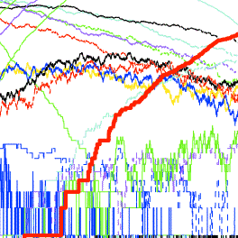

 |
|
Computing behavior. The ability to compute and predict the behavior of biological systems is one measure of our understanding. Here is shown output from a computer simulation for the yeast pheromone signal transduction pathway. Each line shows the computed time-course of a different chemical species inside the cell in response to the addition of mating pheromone. Image courtesy of Drew Endy. |